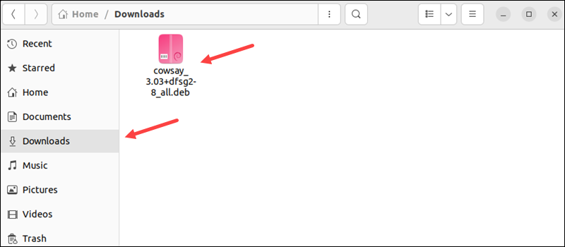
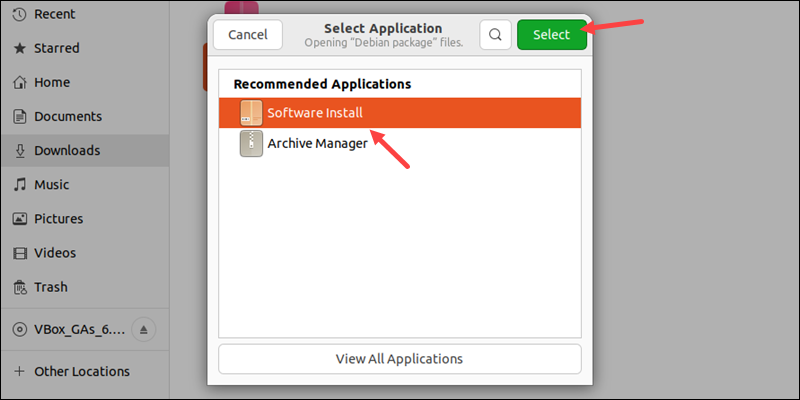
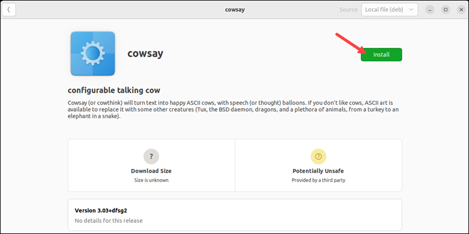
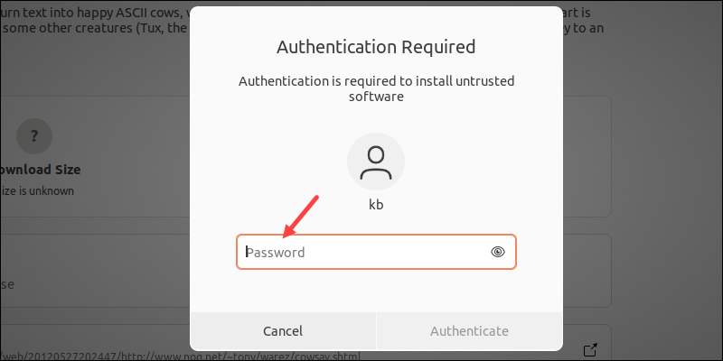
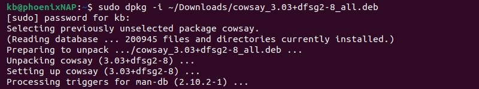
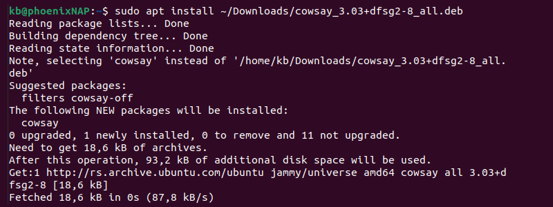
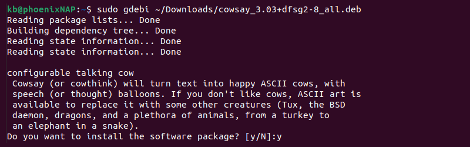

Processus d'installation
Commun
Après l'installation, lors du premier lancement, et lors des lancements suivant un ensemble d'actions et de vérifications sont réalisés.
Les éléments suivants seront vérifiés et installés :
- La présence de NodeJS et sa version ;
- Un navigateur sans interface (Chrome headless avec Puppeteer) pour réaliser les mesures ;
- Notre outil de mesure
lighthouse-plugin-ecoindex(en réalité les packageslighthouse-plugin-ecoindex-coreetlighthouse-plugin-ecoindex-course).
Vous devrez installer NodeJS manuellement si vous n'en avez pas déjà une version installée.
Télécharger NodeJS
Systèmes d'exploitation
Windows
🚨 Point d'attention 🚨
Pour créer un installateur validé par Microsoft, il faut un compte développeur payant (400$/an), ce qui est impossible pour un projet bénévole/open-source.
Le téléchargement et l'installation seront donc un peu plus "complexe" que d'habitude.
1. Téléchargement
Suivant le navigateur utilisé (comme Edge), il vous demandera si vous êtes sûr de vouloir télécharger le fichier. Allez au bout des (ennuyeuses) questions.
2. Installation
Une fois l'application ecoindex-app-{version}-win32-x64-setup.exe téléchargée, vous devrez double-cliquer sur le fichier pour lancer l'installation. Elle aussi vous posera des questions de sécurité.
Mac (M1 ou Intel)
L'application étant signé avec un compte développeur, il n'y a pas d'actions spécifique à réaliser lors de l'installation ou lors du lancement. Des actions pourront vous être demandées si besoin.
Linux
Ubuntu (.deb)
Vous avez deux méthode pour installer l'application sous Ubuntu
Méthode 1: Software Center
Pour installer un paquet deb avec le Software Center (Ubuntu Software), suivez les étapes simples ci-dessous :
- Localisez le paquetage deb téléchargé. Par défaut, le système stocke les fichiers téléchargés dans le répertoire Downloads.

-
Faites un clic droit sur le fichier deb et choisissez Ouvrir avec une autre application.
-
Sélectionnez Software Installer dans la liste des programmes.

Une nouvelle boîte de dialogue s'ouvre avec des détails sur le logiciel.
- Cliquez sur le bouton Installer pour continuer.

- Saisissez le mot de passe de l'utilisateur lorsque vous y êtes invité et appuyez sur Entrée pour vous authentifier.

- Attendez la fin de l'installation. Une fois l'installation terminée, le logiciel est prêt à être utilisé.
Méthode 2: Installer les fichiers deb à l'aide du terminal
Le terminal Ubuntu permet d'installer des paquets en utilisant différents gestionnaires de paquets et commandes. Vous trouverez ci-dessous quelques options pour installer des paquets deb à l'aide de commandes du terminal.
Option 1 : Commande dpkg
La commande dpkg est un gestionnaire de paquets qui permet d'installer, de supprimer et de construire des paquets.
Pour installer un paquetage deb à l'aide de la commande dpkg, exécutez la commande suivante :
sudo dpkg -i <chemin du paquet>

Option 2 : Gestionnaire de paquets apt
La commande apt lance le gestionnaire de paquets apt. Pour installer un paquet deb à l'aide de la commande apt, exécutez la commande suivante
sudo apt install <chemin du paquet>

Option 3 : Installateur de paquets GDebi
L'outil GDebi fonctionne également comme un outil en ligne de commande pour l'installation de paquets. Pour installer un paquet deb avec GDebi en ligne de commande, exécutez ce qui suit dans le terminal :
sudo gdebi <chemin du paquet>

Red Hat (.rpm)
Consulter leur documentation ici.